Final Year ProjectMootCourtSimulator
The first voice-based moot court — argue a live case against AI agents
Honorable Mention — Top 5 of 35 projects · GIK Institute, Aug 2026
A student stands up and argues. From the bench an AI Judge questions them and rules on the law; across the aisle AI Opposing Counsel cross-examines and objects on evidence; on the stand an AI Witness testifies under oath. Nobody types. The whole hearing is spoken, in real time, against a court that talks back — the first moot-court simulator built to be argued rather than prompted, so every objection lands grounded in statute instead of plausibility.
- Time to first audio
- 16.1s 0
- Retrieval MRR
- 0
- Objection F1
- 0
- Eval scenarios
- 0
// the premise
Mooting is how lawyers learn to argue — a simulated hearing, real procedure, a bench that interrupts you mid-sentence. It teaches judgement, not recall: you have to hold your case in your head while someone tries to take it apart. The catch is that it needs a full room — judge, opposing counsel, witnesses — which is exactly why students get so few reps. MootCourtSimulator fills the room with agents instead, so a student can stand up and plead a case aloud, any hour, against a court that answers back.
- Student · Counsel
- Speaks their submissions out loud. Speech is transcribed, handed to whoever's turn it is, and answered in voice.
- AI Judge
- Keeps the bench: puts questions to counsel, weighs the submissions and rules on each objection after looking the statute up.
- AI Opposing Counsel
- Argues the other side — presses your weaknesses in cross-examination and objects to evidence it considers inadmissible.
- AI Witness
- Testifies under oath from the case record, and is held to that record when their answer drifts from it.
// how the room is built
- Carried the spoken loop end to end over a contract-first streaming architecture (Express API + Python FastAPI): real-time STT in, agent reasoning, TTS out — time-to-first-audio cut from 16.1s to 6.9s, so the court answers at something like conversational speed.
- Architected the courtroom as a LangGraph state machine, with a supervisor router deciding whose turn it is and orchestrating independent Judge, Opposing Counsel and Witness agents backed by two-tier memory.
- Implemented ReAct-based Judge agents with dynamic statute-lookup tools, and Opposing Counsel executing autonomous evidentiary objections verified against the Qanun-e-Shahadat Order 1984.
- Engineered a hybrid RAG pipeline fusing BM25 and dense vector search via RRF (k = 60), with LLM reranking and an automated citation-audit engine against an authenticated legal corpus.
- Established a quantitative evaluation harness measuring retrieval performance (MRR 1.00) and multi-agent courtroom behaviour across 32 labelled scenarios — Objection F1 1.00, ground accuracy 100%.
- LangGraph
- Python
- FastAPI
- Express.js
- React 19
- OpenAI API
- PostgreSQL
- Drizzle ORM